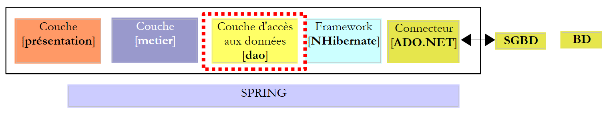
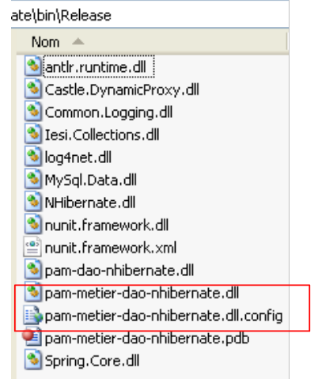

7. De applicatie [SimuPaie] – versie 3 – drielaagse architectuur met NHibernate
Aanbevolen lectuur: „C# 2008, Hoofdstuk 4: Drielaagse architecturen, tests NUnit, Spring-framework”.
7.1. Algemene architectuur van de applicatie
De applicatie [SimuPaie] krijgt nu de volgende drielaagse structuur:
 |
- de laag [1-dao] (DAO = Data Access Object) zorgt voor de toegang tot de gegevens.
- De laag [2-métier] zorgt voor het bedrijfsaspect van de applicatie, namelijk de loonberekening.
- De laag [3-ui] (ui = User Interface) zorgt voor de presentatie van de gegevens aan de gebruiker en de uitvoering van diens verzoeken. We noemen [Application] het geheel van modules dat deze functie vervult. Dit is het contactpunt voor de gebruiker.
- De drie lagen worden onafhankelijk van elkaar gemaakt door het gebruik van .NET-interfaces
- De integratie van de verschillende lagen zal worden gerealiseerd door Spring IoC
De verwerking van een verzoek van een klant verloopt volgens de volgende stappen:
- de klant dient een verzoek in bij de applicatie.
- De applicatie verwerkt dit verzoek. Hiervoor kan zij de hulp nodig hebben van de laag [métier], die op haar beurt de laag [dao] nodig kan hebben als er gegevens met de database moeten worden uitgewisseld.
- De applicatie ontvangt een antwoord van de laag [métier]. Op basis daarvan stuurt zij de juiste weergave (= het antwoord) naar de klant.
Laten we als voorbeeld de loonberekening van een kinderoppas nemen. Hiervoor zijn verschillende stappen nodig:
 |
- de laag [ui] moet de gebruiker vragen
- de identiteit van de persoon voor wie het loon moet worden berekend
- het aantal gewerkte dagen van deze persoon
- het aantal gewerkte uren
- Hiervoor moet de laag de gebruiker de lijst met personen (achternaam, voornaam, SS) uit de tabel [EMPLOYES] tonen, zodat de gebruiker er een kan kiezen. De laag [ui] gebruikt het pad [2, 3, 4, 5, 6, 7] om deze gegevens op te halen. De bewerking [2] is het verzoek om de lijst met werknemers, de bewerking [7] is het antwoord op dit verzoek. Zodra dit is gebeurd, kan de laag [ui] de lijst met werknemers via [8] aan de gebruiker presenteren.
- De gebruiker stuurt het aantal gewerkte dagen en het aantal gewerkte uren door naar de laag [ui]. Dit is de hierboven genoemde bewerking [1]. Tijdens deze stap heeft de gebruiker alleen interactie met de laag [ui]. Deze laag controleert met name de geldigheid van de ingevoerde gegevens. Zodra dit is gebeurd, vraagt de gebruiker om de loonberekening.
- De laag [ui] vraagt de bedrijfslaag om deze berekening uit te voeren. Hiervoor stuurt zij de gegevens door die zij van de gebruiker heeft ontvangen. Dit is de bewerking [2].
- De laag [metier] heeft bepaalde informatie nodig om zijn taak uit te voeren:
- meer uitgebreide informatie over de persoon (adres, index, ...)
- de vergoedingen die aan zijn index zijn gekoppeld
- de tarieven van de verschillende sociale premies die op het brutoloon moeten worden ingehouden
Zij zal deze informatie opvragen bij de laag [dao] via het pad [3, 4, 5, 6]. [3] is het oorspronkelijke verzoek en [6] het antwoord op dit verzoek.
- Nu de laag [metier] over alle benodigde gegevens beschikt, berekent deze de loonafrekening van de door de gebruiker geselecteerde persoon.
- De laag [metier] kan nu reageren op het verzoek van de laag [ui] dat in (d) is gedaan. Dit is het pad [7].
- De laag [ui] zal deze resultaten opmaken om ze in een geschikte vorm aan de gebruiker te presenteren en vervolgens weer te geven. Dit is het pad [8].
- Men kan zich voorstellen dat deze resultaten in een bestand of een database moeten worden opgeslagen. Dit kan automatisch gebeuren. In dat geval zal de laag [metier] na bewerking (f) de laag [dao] vragen om de resultaten op te slaan. Dit gebeurt via het pad [3, 4, 5, 6]. Dit kan ook op verzoek van de gebruiker gebeuren. In dat geval wordt het pad [1-8] gebruikt door de vraag-antwoordcyclus.
Uit deze beschrijving blijkt dat een laag gebruikmaakt van de bronnen van de laag rechts ervan, nooit van die links ervan.
Onze eerste implementatie van deze drielaagse architectuur zal een toepassing zijn met de naam ASP.NET, waarbij
- de lagen [dao] en [metier] worden geïmplementeerd door DLL
- de laag [ui] wordt geïmplementeerd door het webformulier van versie 1 (zie paragraaf 4.2.1).
We beginnen met het implementeren van de laag [dao] met het framework NHibernate.
7.2. De gegevenslaag [dao]
 |
7.2.1. Het Visual Studio C#-project van de laag [dao]
Het Visual Studio-project van de laag [dao] is als volgt:
 |
- in [1], het project in zijn geheel
- in [2], de verschillende klassen van het project
- in [3], de verwijzingen van het project.
- in [4], een map [lib] waarin de DLL zijn verzameld die nodig zijn voor de verschillende projecten die nog zullen volgen
In de projectreferenties [3] zijn de volgende DLL te vinden:
- NHibernate: voor de ORM NHibernate
- MySql.Data: de driver ADO.NET van het SGBD MySQL
- Spring.Core: voor het Spring-framework
- log4net: een logboekbibliotheek
- nunit.framework: een bibliotheek met unit-tests
Deze verwijzingen zijn overgenomen uit de map [lib] [4]. Zorg ervoor dat voor al deze verwijzingen de eigenschap "Lokale kopie" op "True" staat. [5]:
 |
7.2.2. De entiteiten van de laag [dao]
 |
De entiteiten (objecten) die nodig zijn voor de laag [dao] zijn verzameld in de map [entites] van het project. Sommige zijn ons al bekend: [Cotisations], beschreven in paragraaf 6.3.2.1, [Employe], beschreven in paragraaf 6.3.2.3, [Indemnites], beschreven in paragraaf 6.3.2.2. Ze bevinden zich allemaal in de naamruimte [Pam.Dao.Entites].
De klasse [Employe] ontwikkelt zich als volgt:
namespace Pam.Dao.Entites {
public class Employe {
// automatische eigenschappen
public virtual int Id { get; set; }
public virtual int Version { get; set; }
public virtual string SS { get; set; }
public virtual string Nom { get; set; }
public virtual string Prenom { get; set; }
public virtual string Adresse { get; set; }
public virtual string Ville { get; set; }
public virtual string CodePostal { get; set; }
public virtual Indemnites Indemnites { get; set; }
// ontwikkelaars
public Employe() {
}
// ToString
public override string ToString() {
return string.Format("[{0},{1},{2},{3},{4},{5},{6}]", SS, Nom, Prenom, Adresse, Ville, CodePostal, Indemnites);
}
}
}
7.2.3. De klasse [PamException]
De laag [dao] is verantwoordelijk voor het uitwisselen van gegevens met een externe bron. Deze uitwisseling kan mislukken. Als de informatie bijvoorbeeld wordt opgevraagd bij een externe dienst op het internet, zal het ophalen ervan mislukken bij een willekeurige netwerkstoring. Bij dit soort fouten is het in Java gebruikelijk om een uitzondering te genereren. Als de uitzondering niet van het type [RunTimeException] of een afgeleid type is, moet in de methodesignatuur worden aangegeven dat de methode een uitzondering genereert (throws). In .NET zijn alle uitzonderingen ongecontroleerd, c.a.d. gelijkwaardig aan het type [RunTimeException] in Java. Het is dan niet nodig om aan te geven dat de methoden van het type [GetAllIdentitesEmployes, GetEmploye, GetCotisations] een uitzondering kunnen genereren.
Het is echter interessant om uitzonderingen van elkaar te kunnen onderscheiden, omdat de afhandeling ervan kan verschillen. Zo kan de code die verschillende soorten uitzonderingen afhandelt als volgt worden geschreven:
try{
... code pouvant générer divers types d'exceptions
}catch (Exception1 ex1){
...on gère un type d'exceptions
}catch (Exception2 ex2){
...on gère un autre type d'exceptions
}finally{
...
}
We maken dus een uitzonderingstype aan voor de laag [dao] van onze applicatie. Dit is het volgende type [PamException]:
using System;
namespace Pam.Dao.Entites {
public class PamException : Exception {
// de foutcode
public int Code { get; set; }
// constructors
public PamException() {
}
public PamException(int Code)
: base() {
this.Code = Code;
}
public PamException(string message, int Code)
: base(message) {
this.Code = Code;
}
public PamException(string message, Exception ex, int Code)
: base(message, ex) {
this.Code = Code;
}
}
}
- regel 2: de klasse behoort tot de naamruimte [Pam.Dao.Entites]
- regel 4: de klasse is afgeleid van de klasse [Exception]
- regel 7: de klasse heeft een openbare eigenschap [Code], die een foutcode is
- we zullen in onze laag [dao] twee soorten constructors gebruiken:
- die van de regels 18-21, die we kunnen gebruiken zoals hieronder weergegeven:
- (vervolg)
- of die in de regels 23-26, bedoeld om een reeds opgetreden uitzondering door te geven door deze in te kapselen in een uitzondering van het type [PamException]:
try{
....
}catch (IOException ex){
// de uitzondering wordt ingekapseld
throw new PamException("Problème d'accès aux données",ex,10);
}
Deze tweede methode heeft als voordeel dat de informatie die de eerste uitzondering kan bevatten, niet verloren gaat.
7.2.4. De mappingtabellen <--> klassen van NHibernate
Laten we teruggaan naar de architectuur van de applicatie:
 |
Bij het lezen haalt het framework NHibernate gegevens uit de database en zet deze om in objecten waarvan we zojuist de klassen hebben besproken. Bij het schrijven doet het het omgekeerde: op basis van objecten maakt het rijen aan in de databasetabellen, werkt het deze bij of verwijdert het ze. De bestanden die zorgen voor de omzetting tussen tabellen en klassen zijn al besproken:
|
- het bestand [Cotisations.hbm.xml], dat in paragraaf 6.3.2.1 is besproken, legt de koppeling tussen de tabel [COTISATIONS] en de klasse [Cotisations]
<?xml version="1.0" encoding="utf-8" ?>
<hibernate-mapping xmlns="urn:nhibernate-mapping-2.2"
namespace="Pam.Dao.Entites" assembly="pam-dao-nhibernate">
<class name="Cotisations" table="COTISATIONS">
<id name="Id" column="ID">
<generator class="native" />
</id>
<version name="Version" column="VERSION"/>
<property name="CsgRds" column="CSGRDS" not-null="true"/>
<property name="Csgd" column="CSGD" not-null="true"/>
<property name="Retraite" column="RETRAITE" not-null="true"/>
<property name="Secu" column="SECU" not-null="true"/>
</class>
</hibernate-mapping>
- het bestand [Employe.hbm.xml], dat in paragraaf 6.3.2.3 wordt gepresenteerd, legt de koppeling tussen de tabel [EMPLOYES] en de klasse [Employe]
<?xml version="1.0" encoding="utf-8" ?>
<hibernate-mapping xmlns="urn:nhibernate-mapping-2.2"
namespace="Pam.Dao.Entites" assembly="pam-dao-nhibernate">
<class name="Employe" table="EMPLOYES">
<id name="Id" column="ID">
<generator class="native" />
</id>
<version name="Version" column="VERSION"/>
<property name="SS" column="SS" length="15" not-null="true" unique="true"/>
<property name="Nom" column="NOM" length="30" not-null="true"/>
<property name="Prenom" column="PRENOM" length="20" not-null="true"/>
<property name="Adresse" column="ADRESSE" length="50" not-null="true" />
<property name="Ville" column="VILLE" length="30" not-null="true"/>
<property name="CodePostal" column="CP" length="5" not-null="true"/>
<many-to-one name="Indemnites" column="INDEMNITE_ID" cascade="save-update" lazy="false"/>
</class>
</hibernate-mapping>
- het bestand [Indemnites.hbm.xml], zoals beschreven in paragraaf 6.3.2.2, legt de koppeling tussen de tabel [INDEMNITES] en de klasse [Indemnites]
<?xml version="1.0" encoding="utf-8" ?>
<hibernate-mapping xmlns="urn:nhibernate-mapping-2.2"
namespace="Pam.Dao.Entites" assembly="pam-dao-nhibernate">
<class name="Indemnites" table="INDEMNITES">
<id name="Id" column="ID">
<generator class="native" />
</id>
<version name="Version" column="VERSION"/>
<property name="Indice" column="INDICE" not-null="true" unique="true"/>
<property name="BaseHeure" column="BASE_HEURE" not-null="true"/>
<property name="EntretienJour" column="ENTRETIEN_JOUR" not-null="true"/>
<property name="RepasJour" column="REPAS_JOUR" not-null="true" />
<property name="IndemnitesCp" column="INDEMNITES_CP" not-null="true"/>
</class>
</hibernate-mapping>
Opgemerkt moet worden dat in de tag <hibernate-mapping> van deze bestanden (regel 2) de volgende attributen voorkomen:
- namespace : Pam.Dao.Entites. De klassen [Cotisations], [Employe] en [Indemnites] moeten zich in deze naamruimte bevinden.
- assembly: pam-dao-nhibernate. De mappingbestanden [*.hbm.xml] moeten worden ingekapseld in een DLL met de naam [pam-dao-nhibernate]. Om dit resultaat te bereiken, is het C#-project als volgt geconfigureerd:
 |
- in [1], de assembly van het project heeft de naam [pam-dao-nhibernate]
- in [2] worden de mappingbestanden [*.hbm.xml] geïntegreerd in de assembly van het project [3]
7.2.5. De interface [IPamDao] van de laag [dao]
Laten we terugkeren naar de architectuur van onze applicatie:
 |
In eenvoudige gevallen kunnen we uitgaan van de laag [metier] om de interfaces van de applicatie te ontdekken. Om te kunnen werken, heeft de applicatie gegevens nodig:
- die al beschikbaar zijn in bestanden, databases of via het netwerk. Deze worden geleverd door de laag [dao].
- nog niet beschikbaar zijn. Deze worden dan geleverd door de laag [ui], die ze van de gebruiker van de applicatie ontvangt.
Welke interface moet de laag [dao] aanbieden aan de laag [metier]? Welke interacties zijn mogelijk tussen deze twee lagen? De laag [dao] moet de volgende gegevens aan de laag [metier] leveren:
- de lijst met kinderopvangverzorgsters, zodat de gebruiker er een specifieke kan kiezen
- volledige informatie over de gekozen persoon (adres, index, ...)
- de vergoedingen die verband houden met de index van de persoon
- de tarieven van de verschillende sociale premies
Deze gegevens zijn immers al bekend vóór de loonberekening en kunnen dus worden opgeslagen. In de richting [metier] -> [dao] kan de laag [metier] de laag [dao] vragen om het resultaat van de loonberekening op te slaan. Dat zullen we hier niet doen.
Met deze informatie zouden we een eerste definitie van de interface van de laag [dao] kunnen opstellen:
using Pam.Dao.Entites;
namespace Pam.Dao.Service {
public interface IPamDao {
// lijst met alle identiteiten van de werknemers
Employe[] GetAllIdentitesEmployes();
// een specifieke werknemer met zijn vergoedingen
Employe GetEmploye(string ss);
// lijst van alle premies
Cotisations GetCotisations();
}
}
- regel 1: we importeren de naamruimte van de entiteiten van de laag [dao].
- regel 3: de laag [dao] bevindt zich in de naamruimte [Pam.Dao.Service]. Elementen in de naamruimte [Pam.Dao.Entites] kunnen in meerdere exemplaren worden aangemaakt. Elementen in de naamruimte [Pam.Dao.Service] worden in één enkel exemplaar (singleton) aangemaakt. Dit was de reden voor de keuze van de namen van de naamruimten.
- regel 4: de interface heet [IPamDao]. Deze definieert drie methoden:
- regel 6: [GetAllIdentitesEmployes] retourneert een array van objecten van het type [Employe], die de lijst met kinderopvangmedewerkers in vereenvoudigde vorm weergeeft (achternaam, voornaam, SS).
- regel 8, [GetEmploye] retourneert een object van het type [Employe]: de werknemer met het socialezekerheidsnummer dat als parameter aan de methode is doorgegeven, samen met de vergoedingen die aan zijn index zijn gekoppeld.
- regel 10, [GetCotisations] retourneert het object [Cotisations] dat de tarieven van de verschillende sociale premies bevat die op het brutoloon moeten worden ingehouden.
7.3. Implementatie en testen van de laag [dao]
7.3.1. Het Visual Studio-project
Het Visual Studio-project is al eerder gepresenteerd. Ter herinnering:
 |
- in [1], het project in zijn geheel
- in [2], de verschillende klassen van het project. De map [entites] bevat de entiteiten die door de laag [dao] worden verwerkt, evenals de mappingbestanden NHibernate. De map [service] bevat de interface [IPamDao] en de bijbehorende implementatie [PamDaoNHibernate]. De map [tests] bevat een consoletest [Main.cs] en een unit-test [NUnit.cs].
- in [3], de projectreferenties.
7.3.2. Het consoletestprogramma [Main.cs]
Het testprogramma [Main.cs] wordt uitgevoerd in de volgende architectuur:
 |
Het is bedoeld om de methoden van de interface [IPamDao] te testen. Een eenvoudig voorbeeld zou het volgende kunnen zijn:
using System;
using Pam.Dao.Entites;
using Pam.Dao.Service;
using Spring.Context.Support;
namespace Pam.Dao.Tests {
public class MainPamDaoTests {
public static void Main() {
try {
// instantie van laag [dao]
IPamDao pamDao = (IPamDao)ContextRegistry.GetContext().GetObject("pamdao");
// lijst met identiteiten van werknemers
foreach (Employe Employe in pamDao.GetAllIdentitesEmployes()) {
Console.WriteLine(Employe.ToString());
}
// een werknemer met zijn vergoedingen
Console.WriteLine("------------------------------------");
Console.WriteLine(pamDao.GetEmploye("254104940426058"));
Console.WriteLine("------------------------------------");
// overzicht van de premies
Cotisations cotisations = pamDao.GetCotisations();
Console.WriteLine(cotisations.ToString());
} catch (Exception ex) {
// weergave van uitzondering
Console.WriteLine(ex.ToString());
}
//pauze
Console.ReadLine();
}
}
}
- regel 11: er wordt aan Spring gevraagd om een referentie op de laag [dao].
- regels 13-15: test van de methode [GetAllIdentitesEmployes] van de interface [IPamDao]
- regel 18: test van de methode [GetEmploye] van de interface [IPamDao]
- regel 21: test van de methode [GetCotisations] van de interface [IPamDao]
Spring, NHibernate en log4net worden geconfigureerd via het volgende [App.config]- -bestand:
<?xml version="1.0" encoding="utf-8" ?>
<configuration>
<!-- configuratiesecties -->
<configSections>
<section name="log4net" type="log4net.Config.Log4NetConfigurationSectionHandler,log4net" />
<sectionGroup name="spring">
<section name="objects" type="Spring.Context.Support.DefaultSectionHandler, Spring.Core" />
<section name="context" type="Spring.Context.Support.ContextHandler, Spring.Core" />
</sectionGroup>
<section name="hibernate-configuration" type="NHibernate.Cfg.ConfigurationSectionHandler, NHibernate" />
</configSections>
<!-- Spring-configuratie -->
<spring>
<context>
<resource uri="config://spring/objects" />
</context>
<objects xmlns="http://www.springframework.net">
<object id="pamdao" type="Pam.Dao.Service.PamDaoNHibernate, pam-dao-nhibernate" init-method="init" destroy-method="destroy"/>
</objects>
</spring>
<!-- configuratie NHibernate -->
<hibernate-configuration xmlns="urn:nhibernate-configuration-2.2">
<session-factory>
<property name="connection.provider">NHibernate.Connection.DriverConnectionProvider</property>
<property name="connection.driver_class">NHibernate.Driver.MySqlDataDriver</property>
<property name="dialect">NHibernate.Dialect.MySQLDialect</property>
<property name="connection.connection_string">
Server=localhost;Database=dbpam_nhibernate;Uid=root;Pwd=;
</property>
<property name="show_sql">false</property>
<mapping assembly="pam-dao-nhibernate"/>
</session-factory>
</hibernate-configuration>
<!-- Dit gedeelte bevat de log4net-configuratie-instellingen -->
<!-- NOTE IMPORTANTE: de logbestanden zijn standaard niet actief. Ze moeten per programma worden geactiveerd
avec l'instruction log4net.Config.XmlConfigurator.Configure();
! -->
<log4net>
...
</log4net>
</configuration>
De configuratie van NHibernate (regel 10, regels 25-36) is uitgelegd in paragraaf 6.3.1. Let op regel 34, die aangeeft dat de mappingbestanden zich in de assembly [pam-dao-nhibernate] bevinden. Dit is de assembly van het project.
De Spring-configuratie vindt plaats op de regels 6-9 en 15-22. Regel 20 definieert het object [pamdao] dat wordt gebruikt door het consoleprogramma [Main.cs]. De tag <object> heeft hier de volgende attributen:
- type: bepaalt de klasse die moet worden geïnstantieerd. Het is de klasse [PamDaoNHibernate] die de interface [IPamDao] implementeert. Deze is te vinden in de DLL [pam-dao-nhibernate] van het project.
- init-method: de methode van de klasse [PamDaoNHibernate] die moet worden uitgevoerd na het instantiëren van de klasse
- destroy-method: de methode van de klasse [PamDaoNHibernate] die moet worden uitgevoerd wanneer de Spring-container aan het einde van de uitvoering van het project wordt vernietigd.
De uitvoering met de in paragraaf 6.2 beschreven database levert de volgende console-uitvoer op:
- regels 1-2: de 2 werknemers van het type [Employe] met uitsluitend de informatie [SS, Nom, Prenom]
- regel 4: de werknemer van het type [Employe] met het socialezekerheidsnummer [254104940426058]
- regel 5: de premiepercentages
7.3.3. Boeking van klasse [PamDaoNHibernate]
 |
De interface [IPamDao], geïmplementeerd door de laag [dao], is als volgt:
using Pam.Dao.Entites;
namespace Pam.Dao.Service {
public interface IPamDao {
// lijst met alle identiteiten van de werknemers
Employe[] GetAllIdentitesEmployes();
// een specifieke medewerker met zijn of haar vergoedingen
Employe GetEmploye(string ss);
// overzicht van alle premies
Cotisations GetCotisations();
}
}
Vraag: schrijf de code van de klasse [PamDaoNHibernate] die de bovenstaande interface [IPamDao] implementeert met behulp van het framework NHibernate, geconfigureerd zoals eerder beschreven. We zullen ook de methoden init en destroy implementeren die door Spring worden uitgevoerd. De methode *init zal de klasse *SessionFactory aanmaken, waaruit we objecten van het type *Session zullen verkrijgen. De methode destroy zal deze SessionFactory* afsluiten. We zullen gebruikmaken van de voorbeelden uit paragraaf 6.5.
Beperkingen:
We gaan ervan uit dat bepaalde gegevens die worden opgevraagd bij de laag [dao] volledig in het geheugen kunnen worden opgeslagen. Om de prestaties te verbeteren, zal de klasse [PamDaoNHibernate] dus het volgende opslaan:
- de tabel [EMPLOYES] in de vorm (SS, NOM, PRENOM) die nodig is voor de methode [GetAllIdentitesEmployes] in de vorm van een array van objecten van het type [Employe]
- de tabel [COTISATIONS] in de vorm van één enkel object van het type [Cotisations]
Dit gebeurt in de methode [init] van de klasse. Het raamwerk van de klasse [PamDaoNHibernate] zou er als volgt uit kunnen zien:
using System;
...
namespace Pam.Dao.Service {
class PamDaoNHibernate : IPamDao {
// vertrouwelijke velden
private Cotisations cotisations;
private Employe[] employes;
private ISessionFactory sessionFactory = null;
// init
public void init() {
try {
// initialisatie van de factory
sessionFactory = new Configuration().Configure().BuildSessionFactory();
// de premietarieven en werknemers worden opgehaald om in de cache op te slaan
.......................
}
// afsluiten SessionFactory
public void destroy() {
if (sessionFactory != null) {
sessionFactory.Close();
}
}
// lijst met alle identiteiten van de werknemers
public Employe[] GetAllIdentitesEmployes() {
return employes;
}
// een bepaalde werknemer met zijn vergoedingen
public Employe GetEmploye(string ss) {
................................
}
// overzicht van de premies
public Cotisations GetCotisations() {
return cotisations;
}
}
}
7.3.4. Unit-tests met NUnit
Aanbevolen lectuur: "C# 2008, Hoofdstuk 4: Drielaagse architecturen, NUnit-tests, Spring-framework".
De vorige test was visueel: we controleerden op het scherm of we inderdaad de verwachte resultaten kregen. Dit is in een professionele omgeving onvoldoende. Tests moeten altijd zoveel mogelijk worden geautomatiseerd en ernaar streven dat er geen menselijke tussenkomst nodig is. De mens is namelijk onderhevig aan vermoeidheid en zijn vermogen om tests te controleren neemt in de loop van de dag af. De tool [NUnit] helpt bij het realiseren van deze automatisering. Deze is beschikbaar op de URL [http://www.nunit.org/].
Het Visual Studio-project van de laag [dao] zal als volgt evolueren:
 |
- naar [1], het testprogramma [NUnit.cs]
- in [2,3], het project zal een DLL genereren met de naam [pam-dao-nhibernate.dll]
- in [4], de verwijzing naar DLL van het framework NUnit: [nunit.framework.dll]
- in [5], zal de klasse [Main.cs] niet worden opgenomen in de DLL [pam-dao-nhibernate]
- in [6] wordt de klasse [NUnit.cs] opgenomen in de DLL [pam-dao-nhibernate]
De testklasse NUnit is als volgt:
using System.Collections;
using NUnit.Framework;
using Pam.Dao.Service;
using Pam.Dao.Entites;
using Spring.Objects.Factory.Xml;
using Spring.Core.IO;
using Spring.Context.Support;
namespace Pam.Dao.Tests {
[TestFixture]
public class NunitPamDao : AssertionHelper {
// de te testen laag [dao]
private IPamDao pamDao = null;
// fabrikant
public NunitPamDao() {
// instantie van laag [dao]
pamDao = (IPamDao)ContextRegistry.GetContext().GetObject("pamdao");
}
// initialisatie
[SetUp]
public void Init() {
}
[Test]
public void GetAllIdentitesEmployes() {
// controle aantal werknemers
Expect(2, EqualTo(pamDao.GetAllIdentitesEmployes().Length));
}
[Test]
public void GetCotisations() {
// controle premiepercentages
Cotisations cotisations = pamDao.GetCotisations();
Expect(3.49, EqualTo(cotisations.CsgRds).Within(1E-06));
Expect(6.15, EqualTo(cotisations.Csgd).Within(1E-06));
Expect(9.39, EqualTo(cotisations.Secu).Within(1E-06));
Expect(7.88, EqualTo(cotisations.Retraite).Within(1E-06));
}
[Test]
public void GetEmployeIdemnites() {
// controle personen
Employe employe1 = pamDao.GetEmploye("254104940426058");
Employe employe2 = pamDao.GetEmploye("260124402111742");
Expect("Jouveinal", EqualTo(employe1.Nom));
Expect(2.1, EqualTo(employe1.Indemnites.BaseHeure).Within(1E-06));
Expect("Laverti", EqualTo(employe2.Nom));
Expect(1.93, EqualTo(employe2.Indemnites.BaseHeure).Within(1E-06));
}
[Test]
public void GetEmployeIdemnites2() {
// controle op niet-bestaande persoon
bool erreur = false;
try {
Employe employe1 = pamDao.GetEmploye("xx");
} catch {
erreur = true;
}
Expect(erreur, True);
}
}
}
- regel 11: de klasse heeft het attribuut [TestFixture], waardoor het een testklasse [NUnit] is.
- regel 12: de klasse is afgeleid van de hulpprogrammaklasse AssertionHelper van het framework NUnit (vanaf versie 2.4.6).
- regel 14: het privéveld [pamDao] is een instantie van de interface voor toegang tot de laag [dao]. Merk op dat het type van dit veld een interface is en geen klasse. Dit betekent dat de instantie [pamDao] alleen methoden toegankelijk maakt, namelijk die van de interface [IPamDao].
- De methoden die in de klas worden getest, zijn de methoden met het attribuut [Test]. Voor al deze methoden verloopt het testproces als volgt:
- eerst wordt de methode met het attribuut [SetUp] uitgevoerd. Deze methode dient om de voor de test benodigde middelen (netwerkverbindingen, databaseverbindingen, ...) voor te bereiden.
- Vervolgens wordt de te testen methode uitgevoerd
- en ten slotte wordt de methode met het attribuut [TearDown] uitgevoerd. Deze dient doorgaans om de resources vrij te maken die door de methode met het attribuut [SetUp] zijn ingezet.
- In onze test hoeven er niet voor elke test eerst middelen te worden toegewezen en daarna weer vrijgegeven. Daarom hebben we geen methode nodig met de attributen [SetUp] en [TearDown]. Ter illustratie hebben we in de regels 23-26 een methode met het attribuut [SetUp] weergegeven.
- regels 17-20: de constructor van de klasse initialiseert het privéveld [pamDao] met behulp van Spring en [App.config].
- regels 29-32: testen de methode [GetAllIdentitesEmployes]
- regels 35-42: testen de methode [GetCotisations]
- regels 45-53: testen de methode [GetEmploye]
- regels 56-65: testen de methode [GetEmploye] bij een uitzondering.
Bij het genereren van het project worden de bestanden DLL en [pam-dao-nhibernate.dll] aangemaakt in de map [bin/Release].
 |
De map [bin/Release] bevat bovendien:
- de DLL-bestanden die deel uitmaken van de projectreferenties en waarvan het attribuut [Copie locale] op ‘waar’ staat: [Spring.Core, MySql.data, NHibernate, log4net]. Deze DLL-bestanden gaan vergezeld van kopieën van de DLL-bestanden die ze zelf gebruiken:
- [CastleDynamicProxy, Iesi.Collections] voor de tool NHibernate
- [antlr.runtime, Common.Logging] voor de Spring-tool
- het bestand [pam-dao-nhibernate.dll.config] is een kopie van het configuratiebestand [App.config]. Het is VS dat deze duplicatie uitvoert. Tijdens de uitvoering wordt het bestand [pam-dao-nhibernate.dll.config] gebruikt en niet [App.config].
We laden DLL en [pam-dao-nhibernate.dll] met de tool [NUnit-Gui], versie 2.4.6, en voeren de tests uit:

Hierboven zijn de tests geslaagd.
Praktische opdracht:
voer de tests van de klasse [PamDaoNHibernate] uit op de machine.- Gebruik verschillende configuratiebestanden [App.config] om verschillende SGBD te gebruiken (Firebird, MySQL, Postgres, SQL Server)
7.3.5. Genereren v e van de DLL van de laag [dao]
Zodra de klasse [PamDaoNHibernate] is geschreven en getest, wordt de klasse DLL van de laag [dao] op de volgende manier gegenereerd:
 |
- [1], de testprogramma’s worden uitgesloten van de projectassemblage
- [2,3], configuratie van het project
- [4], het project wordt gegenereerd
- DLL wordt gegenereerd in de map [bin/Release] [5]. We voegen dit toe aan de DLL-bestanden die al aanwezig zijn in de map [lib] [6]:
 |
7.4. De bedrijfslaag
Laten we nog eens terugkomen op de algemene architectuur van de applicatie [SimuPaie]:
 |
We gaan er nu vanuit dat de laag [dao] is geïmplementeerd en dat deze is ingekapseld in de DLL [pam-dao-nhibernate.dll]. We richten ons nu op de laag [metier]. Deze laag implementeert de bedrijfsregels, in dit geval de regels voor de berekening van een salaris.
7.4.1. Het Visual Studio- -project van de laag [metier]
Het Visual Studio-project van de bedrijfslaag zou er als volgt uit kunnen zien:
 |
- in [1] het volledige project geconfigureerd door het bestand [App.config]
- in [2] bestaat de laag [metier] uit de twee mappen [entites, service]. De map [tests] bevat een testprogramma voor de console (Main.cs) en een testprogramma NUnit (NUnit.cs).
- In [3] staan de door het project gebruikte referenties. Let op de DLL en [pam-dao-nhibernate] van de eerder besproken laag [dao].
7.4.2. De interface [IPamMetier] van de laag [metier]
Laten we terugkeren naar de algemene architectuur van de applicatie:
 |
Welke interface moet de laag [metier] aanbieden aan de laag [ui]? Wat zijn de mogelijke interacties tussen deze twee lagen? Laten we nog eens kijken naar de webinterface die aan de gebruiker wordt gepresenteerd:
 |
- Bij de eerste weergave van het formulier moet in [1] de lijst met medewerkers te vinden zijn. Een vereenvoudigde lijst volstaat (Achternaam, Voornaam, SS). Het nummer SS is nodig om toegang te krijgen tot aanvullende informatie over de geselecteerde medewerker (gegevens 6 tot en met 11).
- De gegevens 12 tot en met 15 zijn de verschillende premietarieven.
- De gegevens 16 tot en met 19 zijn de toeslagen die verband houden met de index van de werknemer
- De gegevens 20 tot en met 24 zijn de looncomponenten die worden berekend op basis van de door de gebruiker ingevoerde gegevens 1 tot en met 3.
De interface [IPamMetier] die door de laag [metier] aan de laag [ui] wordt aangeboden, moet aan de bovenstaande eisen voldoen. Er zijn talrijke mogelijke interfaces. Wij stellen de volgende voor:
using Pam.Dao.Entites;
using Pam.Metier.Entites;
namespace Pam.Metier.Service {
public interface IPamMetier {
// lijst met alle identiteitsgegevens van werknemers
Employe[] GetAllIdentitesEmployes();
// ------- de salarisberekening
FeuilleSalaire GetSalaire(string ss, double heuresTravaillées, int joursTravaillés);
}
}
- regel 7: de methode waarmee de keuzelijst [1] kan worden gevuld
- regel 10: de methode waarmee de gegevens 6 tot en met 24 kunnen worden verkregen. Deze zijn verzameld in een object van het type [FeuilleSalaire].
7.4.3. De entiteiten van de laag [metier]
De map [entites] van het Visual Studio-project bevat de objecten die door de businessklasse worden beheerd: [FeuilleSalaire] en [ElementsSalaire].
 |
De klasse [FeuilleSalaire] bevat de gegevens 6 tot en met 24 van het vorige formulier:
using Pam.Dao.Entites;
namespace Pam.Metier.Entites {
public class FeuilleSalaire {
// automatische eigenschappen
public Employe Employe { get; set; }
public Cotisations Cotisations { get; set; }
public ElementsSalaire ElementsSalaire { get; set; }
// ToString
public override string ToString() {
return string.Format("[{0},{1},{2}", Employe, Cotisations, ElementsSalaire);
}
}
}
- regel 8: de gegevens 6 tot en met 11 over de werknemer wiens salaris wordt berekend en de gegevens 16 tot en met 19 over zijn vergoedingen. Hierbij moet worden opgemerkt dat een object [Employe] een object [Indemnites] omvat dat de vergoedingen van de werknemer weergeeft.
- regel 9: de gegevens 12 tot en met 15
- regel 10: de gegevens 20 tot en met 24
- regels 13-15: de methode [ToString]
De klasse [ElementsSalaire] omvat de gegevens 20 tot en met 24 van het formulier:
namespace Pam.Metier.Entites {
public class ElementsSalaire {
// automatische eigenschappen
public double SalaireBase { get; set; }
public double CotisationsSociales { get; set; }
public double IndemnitesEntretien { get; set; }
public double IndemnitesRepas { get; set; }
public double SalaireNet { get; set; }
// ToString
public override string ToString() {
return string.Format("[{0} : {1} : {2} : {3} : {4} ]", SalaireBase, CotisationsSociales, IndemnitesEntretien, IndemnitesRepas, SalaireNet);
}
}
}
- regels 4-8: de salariscomponenten zoals uitgelegd in de bedrijfsregels beschreven in paragraaf 3.2.
- regel 4: het basisloon van de werknemer, afhankelijk van het aantal gewerkte uren
- regel 5: de premies die op dit basisloon worden ingehouden
- regels 6 en 7: de toeslagen die bij het basisloon moeten worden opgeteld, afhankelijk van de index van de werknemer en het aantal gewerkte dagen
- regel 8: het uit te betalen nettoloon
- regels 12-15: de methode [ToString] van de klasse.
7.4.4. Implementatie van de laag [metier]
 |
We gaan de interface [IPamMetier] implementeren met twee klassen:
- [AbstractBasePamMetier], een abstracte klasse waarin we de toegang tot de gegevens van de interface [IPamMetier] zullen implementeren. Deze klasse zal een verwijzing bevatten naar de laag [dao].
- [PamMetier] is een klasse die is afgeleid van [AbstractBasePamMetier], die op haar beurt de bedrijfsregels van de interface [IPamMetier] zal implementeren. Deze klasse zal geen kennis hebben van de laag [dao].
De klasse [AbstractBasePamMetier] ziet er als volgt uit:
using Pam.Dao.Entites;
using Pam.Dao.Service;
using Pam.Metier.Entites;
namespace Pam.Metier.Service {
public abstract class AbstractBasePamMetier : IPamMetier {
// het object voor gegevenstoegang
public IPamDao PamDao { get; set; }
// lijst met alle identiteiten van de werknemers
public Employe[] GetAllIdentitesEmployes() {
return PamDao.GetAllIdentitesEmployes();
}
// een specifieke werknemer met zijn vergoedingen
protected Employe GetEmploye(string ss) {
return PamDao.GetEmploye(ss);
}
// de premies
protected Cotisations GetCotisations() {
return PamDao.GetCotisations();
}
// de salarisberekening
public abstract FeuilleSalaire GetSalaire(string ss, double heuresTravaillées, int joursTravaillés);
}
}
- regel 5: de klasse behoort tot de naamruimte [Pam.Metier.Service], net als alle klassen en interfaces van de laag [metier].
- regel 6: de klasse is abstract (attribuut abstract) en implementeert de interface [IPamMetier]
- regel 9: de klasse bevat een verwijzing naar de laag [dao] in de vorm van een openbare eigenschap
- regels 12-14: implementatie van de methode [GetAllIdentitesEmployes] van de interface [IPamMetier] – maakt gebruik van de gelijknamige methode van de laag [dao]
- regels 17-19: interne (protected) methode [GetEmploye] die gebruikmaakt van de gelijknamige methode van de laag [dao] – gedeclareerd als protected zodat afgeleide klassen er toegang toe hebben zonder dat deze openbaar is.
- regels 22-24: interne (protected) methode [GetCotisations] die een beroep doet op de gelijknamige methode van de laag [dao]
- regel 27: abstracte implementatie (attribuut abstract) van de methode [GetSalaire] van de interface [IPamMetier].
De salarisberekening wordt geïmplementeerd door de volgende klasse [PamMetier]:
using System;
using Pam.Dao.Entites;
using Pam.Metier.Entites;
namespace Pam.Metier.Service {
public class PamMetier : AbstractBasePamMetier {
// loonberekening
public override FeuilleSalaire GetSalaire(string ss, double heuresTravaillées, int joursTravaillés) {
// SS: SS-nummer van de werknemer
// HeuresTravaillées: het aantal gewerkte uren
// Gewerkte dagen: aantal gewerkte dagen
// hiermee wordt de werknemer met zijn vergoedingen opgehaald
...
// de verschillende premietarieven worden opgehaald
...
// de looncomponenten worden berekend
...
// de loonstrook wordt gegenereerd
return ...;
}
}
}
- regel 7: de klasse is afgeleid van [AbstractBasePamMetier] en implementeert daardoor de interface [IPamMetier]
- regel 10: de te implementeren methode [GetSalaire]
Vraag: schrijf de code voor de methode [GetSalaire].
7.4.5. De consoletest van de laag [metier]
Laten we het Visual Studio-project van de laag [metier] nog eens bekijken:
 |
Het bovenstaande testprogramma [Main] test de methoden van de interface [IPamMetier]. Een eenvoudig voorbeeld zou als volgt kunnen zijn:
using System;
using Pam.Dao.Entites;
using Pam.Metier.Service;
using Spring.Context.Support;
namespace Pam.Metier.Tests {
class MainPamMetierTests {
public static void Main() {
try {
// instantie van laag [metier]
IPamMetier pamMetier = ContextRegistry.GetContext().GetObject("pammetier") as IPamMetier;
// berekeningen van loonstroken
Console.WriteLine(pamMetier.GetSalaire("260124402111742", 30, 5));
Console.WriteLine(pamMetier.GetSalaire("254104940426058", 150, 20));
try {
Console.WriteLine(pamMetier.GetSalaire("xx", 150, 20));
} catch (PamException ex) {
Console.WriteLine(string.Format("PamException : {0}", ex.Message));
}
} catch (Exception ex) {
Console.WriteLine(string.Format("Exception : {0}", ex.ToString()));
}
// pauze
Console.ReadLine();
}
}
}
- regel 11: instantiëring door Spring van de laag [metier].
- regels 13-14: testen van de methode [GetSalaire] van de interface [IPamMetier]
- regels 15-22: test van de methode [GetSalaire] wanneer er een uitzondering optreedt
Het testprogramma gebruikt het volgende configuratiebestand [App.config] :
<?xml version="1.0" encoding="utf-8" ?>
<configuration>
<!-- configuratiesecties -->
<configSections>
<section name="log4net" type="log4net.Config.Log4NetConfigurationSectionHandler,log4net" />
<sectionGroup name="spring">
<section name="objects" type="Spring.Context.Support.DefaultSectionHandler, Spring.Core" />
<section name="context" type="Spring.Context.Support.ContextHandler, Spring.Core" />
</sectionGroup>
<section name="hibernate-configuration" type="NHibernate.Cfg.ConfigurationSectionHandler, NHibernate" />
</configSections>
<!-- Spring-configuratie -->
<spring>
<context>
<resource uri="config://spring/objects" />
</context>
<objects xmlns="http://www.springframework.net">
<object id="pamdao" type="Pam.Dao.Service.PamDaoNHibernate, pam-dao-nhibernate" init-method="init" destroy-method="destroy"/>
<object id="pammetier" type="Pam.Metier.Service.PamMetier, pam-metier-dao-nhibernate" >
<property name="PamDao" ref="pamdao"/>
</object>
</objects>
</spring>
<!-- configuratie NHibernate -->
<hibernate-configuration xmlns="urn:nhibernate-configuration-2.2">
....
</hibernate-configuration>
<!-- Dit gedeelte bevat de log4net-configuratie-instellingen -->
<!-- NOTE IMPORTANTE: de logbestanden zijn standaard niet actief. Ze moeten per programma worden geactiveerd
avec l'instruction log4net.Config.XmlConfigurator.Configure();
! -->
<log4net>
...
</log4net>
</configuration>
Dit bestand is identiek aan het bestand [App.config] dat wordt gebruikt voor het project van de laag [dao] (zie paragraaf 7.3.2), op de volgende details na:
- regel 20: het object met id "pamdao" heeft het type [Pam.Dao.Service.PamDaoNHibernate] en bevindt zich in de assembly [pam-dao-nhibernate]. De laag [dao] is de laag die eerder is besproken.
- regels 21-23: het object met id "pammetier" heeft het type [Pam.Metier.Service.PamMetier] en bevindt zich in de assembly [pam-metier-dao-nhibernate]. Het project moet als volgt worden geconfigureerd:
 |
- regel 22: het door Spring geïnstantieerde object [PamMetier] heeft een openbare eigenschap [PamDao] die een verwijzing is naar de laag [dao]. Deze eigenschap wordt geïnitialiseerd met de verwijzing naar de laag [dao] die op regel 20 is aangemaakt.
De uitvoering met de in paragraaf 6.2 beschreven database levert de volgende console-uitvoer op:
- regels 1-2: de 2 gevraagde loonstroken
- regel 3: de uitzondering van het type [PamException], veroorzaakt door een niet-bestaande medewerker.
7.4.6. Unit-tests van de bedrijfslaag
De vorige test was visueel: we controleerden op het scherm of we inderdaad de verwachte resultaten kregen. We gaan nu over op de niet-visuele tests NUnit.
Laten we teruggaan naar het Visual Studio-project van het project [metier]:
 |
- in [1], het testprogramma NUnit
- in [2], de referentie op de DLL [nunit.framework]
 |
- in [3,4] zal de projectgeneratie de bestanden DLL en [pam-metier-dao-nhibernate.dll] opleveren.
- in [5] wordt het bestand [NUnit.cs] opgenomen in de assembly [pam-metier-dao-nhibernate.dll], maar niet in [Main.cs] en [6]
De testklasse NUnit is als volgt:
using NUnit.Framework;
using Pam.Dao.Entites;
using Pam.Metier.Entites;
using Pam.Metier.Service;
using Spring.Context.Support;
namespace Pam.Metier.Tests {
[TestFixture()]
public class NunitTestPamMetier : AssertionHelper {
// de te testen laag [metier]
private IPamMetier pamMetier;
// constructor
public NunitTestPamMetier() {
// instantiëring van laag [dao]
pamMetier = ContextRegistry.GetContext().GetObject("pammetier") as IPamMetier;
}
[Test]
public void GetAllIdentitesEmployes() {
// controle aantal werknemers
Expect(2, EqualTo(pamMetier.GetAllIdentitesEmployes().Length));
}
[Test]
public void GetSalaire1() {
// berekening van een loonstrook
FeuilleSalaire feuilleSalaire = pamMetier.GetSalaire("254104940426058", 150, 20);
// controles
Expect(368.77, EqualTo(feuilleSalaire.ElementsSalaire.SalaireNet).Within(1E-06));
// loonlijst van een niet-bestaande werknemer
bool erreur = false;
try {
feuilleSalaire = pamMetier.GetSalaire("xx", 150, 20);
} catch (PamException) {
erreur = true;
}
Expect(erreur, True);
}
}
}
- regel 13: het privéveld [pamMetier] is een instantie van de interface voor toegang tot de laag [metier]. Merk op dat het type van dit veld een interface is en geen klasse. Dit betekent dat de instantie [PamMetier] alleen methoden toegankelijk maakt, namelijk die van de interface [IPamMetier].
- regels 16-19: de constructor van de klasse initialiseert het privéveld [pamMetier] met behulp van Spring en het configuratiebestand [App.config].
- regels 23-26: testen de methode [GetAllIdentitesEmployes]
- regels 29-42: testen de methode [GetSalaire]
Het bovenstaande project genereert DLL en [pam-metier.dll] in de map [bin/Release].
 |
De map [bin/Release] bevat bovendien:
- de DLL-bestanden die deel uitmaken van de projectreferenties en waarvan het attribuut [Copie locale] op ‘waar’ staat: [Spring.Core, MySql.data, NHibernate, log4net, pam-dao-nhibernate]. Deze DLL-bestanden gaan vergezeld van kopieën van de DLL-bestanden die ze zelf gebruiken:
- [CastleDynamicProxy, Iesi.Collections] voor de tool NHibernate
- [antlr.runtime, Common.Logging] voor de Spring-tool
- het bestand [pam-metier-dao-nhibernate.dll.config] is een kopie van het configuratiebestand [App.config].
We laden DLL en [pam-metier-dao-nhibernate.dll] met de tool [NUnit-Gui, version 2.4.6] en voeren de tests uit:

Hierboven zijn de tests geslaagd.
Praktische opdracht:
voer de tests van de klasse [PamMetier] uit op de machine.- Gebruik verschillende configuratiebestanden App.config om verschillende SGBD te gebruiken (Firebird, MySQL, Postgres, SQL Server)
7.4.7. Genereren van de DLL van de [metier]-laag
Zodra de klasse [PamMetier] is geschreven en getest, wordt de DLL en [pam-metier-dao-nhibernate.dll] gegenereerd vanuit de laag [metier] volgens de methode beschreven in paragraaf 7.3.5 Er moet op worden gelet dat de testprogramma’s [Main.cs] en [NUnit.cs] niet in de DLL worden opgenomen. Vervolgens wordt deze in de map [lib] van de mappen DLL en [1] geplaatst.
 |
7.5. De laag [web]
Laten we nog eens terugkomen op de algemene architectuur van de applicatie [SimuPaie]:
 |
We gaan ervan uit dat de lagen [dao] en [métier] al zijn geïmplementeerd en ingekapseld in de lagen DLL en [pam-dao-nhibernate, pam-metier-dao-nhibernate.dll]. We beschrijven nu de weblaag.
7.5.1. Het Visual Web Developer-project van de laag [web]
 |
- in [1], het project in zijn geheel:
- [Global.asax]: de klasse die bij het opstarten van de webapplicatie wordt geïnstantieerd en die zorgt voor de initialisatie van de applicatie
- [Default.aspx]: de pagina van het webformulier
- in [2], de DLL die nodig zijn voor de webapplicatie. Let op de DLL van de eerder opgebouwde lagen [dao] en [metier].
7.5.2. Configuratie van de applicatie
Het bestand [Web.config], dat de applicatie configureert, definieert dezelfde gegevens als het bestand [App.config] dat de eerder besproken laag [metier] configureert. Deze gegevens moeten worden opgenomen in de vooraf gegenereerde code van het bestand [Web.config]:
<?xml version="1.0" encoding="utf-8"?>
<configuration>
<configSections>
<sectionGroup name="system.web.extensions" type="System.Web.Configuration.SystemWebExtensionsSectionGroup, System.Web.Extensions, Version=3.5.0.0, Culture=neutral, PublicKeyToken=31BF3856AD364E35">
..........
</sectionGroup>
<sectionGroup name="spring">
<section name="context" type="Spring.Context.Support.ContextHandler, Spring.Core" />
<section name="objects" type="Spring.Context.Support.DefaultSectionHandler, Spring.Core" />
</sectionGroup>
<section name="hibernate-configuration" type="NHibernate.Cfg.ConfigurationSectionHandler, NHibernate" />
<section name="log4net" type="log4net.Config.Log4NetConfigurationSectionHandler,log4net" />
</configSections>
<!-- Spring-configuratie -->
<spring>
<context>
<resource uri="config://spring/objects" />
</context>
<objects xmlns="http://www.springframework.net">
<object id="pamdao" type="Pam.Dao.Service.PamDaoNHibernate, pam-dao-nhibernate" init-method="init" destroy-method="destroy"/>
<object id="pammetier" type="Pam.Metier.Service.PamMetier, pam-metier-dao-nhibernate" >
<property name="PamDao" ref="pamdao"/>
</object>
</objects>
</spring>
<!-- NHibernate-configuratie -->
<hibernate-configuration xmlns="urn:nhibernate-configuration-2.2">
<session-factory>
<property name="connection.provider">NHibernate.Connection.DriverConnectionProvider</property>
<!--
<property name="connection.driver_class">NHibernate.Driver.MySqlDataDriver</property>
-->
<property name="dialect">NHibernate.Dialect.MySQLDialect</property>
<property name="connection.connection_string">
Server=localhost;Database=dbpam_nhibernate;Uid=root;Pwd=;
</property>
<property name="show_sql">false</property>
<mapping assembly="pam-dao-nhibernate"/>
</session-factory>
</hibernate-configuration>
<!-- Dit gedeelte bevat de log4net-configuratie-instellingen -->
<!-- NOTE IMPORTANTE: de logbestanden zijn standaard niet actief. Ze moeten programmatisch worden geactiveerd
avec l'instruction log4net.Config.XmlConfigurator.Configure();
! -->
<log4net>
....
</log4net>
<appSettings/>
<connectionStrings/>
<system.web>
....
....
</configuration>
In de regels 9-12, 18-28 en 31-44 vinden we de Spring- en NHibernate-configuratie terug die is beschreven in het bestand [App.config] van de laag [metier] (zie paragraaf 7.4.5).
Global.asax.cs
using System;
using Pam.Dao.Entites;
using Pam.Metier.Service;
using Spring.Context.Support;
namespace pam_v3
{
public class Global : System.Web.HttpApplication
{
// --- statische gegevens van de applicatie ---
public static Employe[] Employes;
public static IPamMetier PamMetier = null;
public static string Msg;
public static bool Erreur = false;
// opstarten van de applicatie
public void Application_Start(object sender, EventArgs e)
{
// verwerking van het configuratiebestand
try
{
// instantiëren van de laag [metier]
PamMetier = ContextRegistry.GetContext().GetObject("pammetier") as IPamMetier;
// vereenvoudigde lijst van medewerkers
Employes = PamMetier.GetAllIdentitesEmployes();
// gelukt
Msg = "Base chargée...";
}
catch (Exception ex)
{
// fout genoteerd
Msg = string.Format("L'erreur suivante s'est produite lors de l'accès à la base de données : {0}", ex);
Erreur = true;
}
}
}
}
Ter herinnering:
- de klasse [Global.asax.cs] bij het opstarten van de applicatie wordt geïnstantieerd en dat deze instantie toegankelijk is voor alle verzoeken van alle gebruikers. De statische velden op de regels 11-14 worden dus gedeeld door alle gebruikers.
- dat de methode [Application_Start] slechts één keer wordt uitgevoerd na het instantiëren van de klasse. Dit is de methode waarin doorgaans de initialisatie van de applicatie plaatsvindt.
De gegevens die door alle gebruikers worden gedeeld, zijn de volgende:
- regel 11: de array met objecten van het type [Employe] waarin de vereenvoudigde lijst (SS, NOM, PRENOM) van alle werknemers wordt opgeslagen
- regel 12: een verwijzing naar de laag [metier], ingekapseld in de DLL [pam-metier-dao-nhibernate.dll]
- regel 13: een bericht dat aangeeft hoe de initialisatie is verlopen (succesvol of met een fout)
- regel 14: een booleaanse waarde die aangeeft of de initialisatie al dan niet met een fout is beëindigd.
In [Application_Start]:
- regel 23: Spring instantiëert de lagen [metier] en [dao] en retourneert een verwijzing naar de laag [metier]. Deze wordt opgeslagen in het statische veld [PamMetier] van regel 12.
- regel 25: de tabel met medewerkers wordt opgevraagd bij de laag [metier]
- regel 27: het bericht bij succes
- regel 32: het foutbericht
7.5.3. Het formulier [Default.aspx]
Het formulier is dat van versie 2.

Vraag: Schrijf, geïnspireerd door de C#-code op de pagina [Default.aspx.cs] van versie 2, de code [Default.aspx.cs] van versie 3. Het enige verschil zit in de berekening van het salaris. Terwijl in versie 2 de methode API ADO.NET werd gebruikt om informatie uit de database op te halen, gebruiken we hier de methode GetSalaire uit de laag [metier].
Praktische opdracht:
implementeer de vorige webapplicatie op een computer- gebruik verschillende configuratiebestanden [Web.config] om verschillende SGBD te gebruiken (Firebird, MySQL, Postgres, SQL Server)